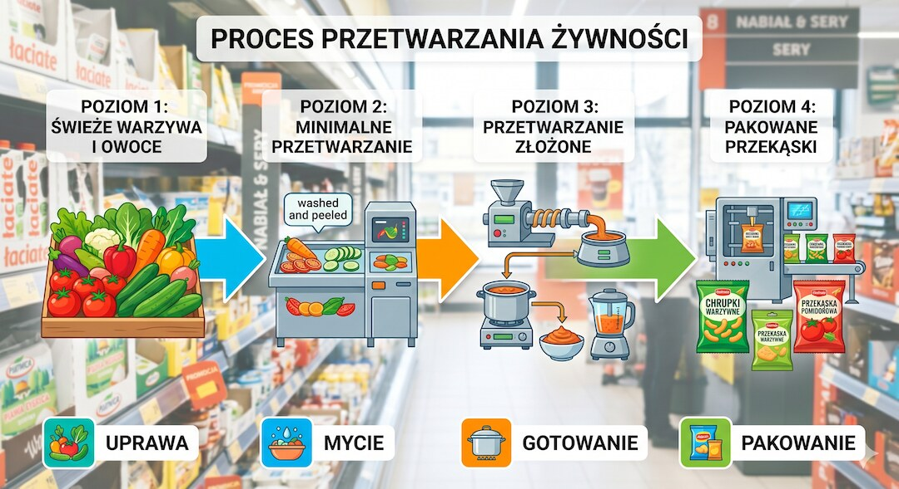
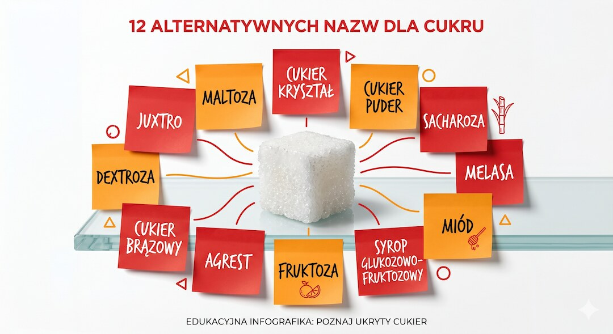
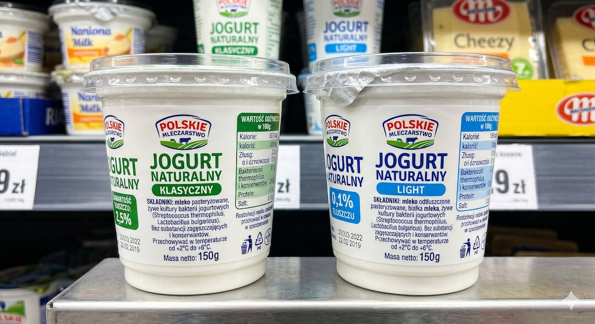
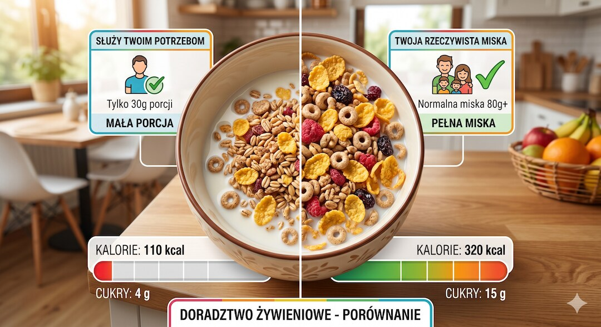
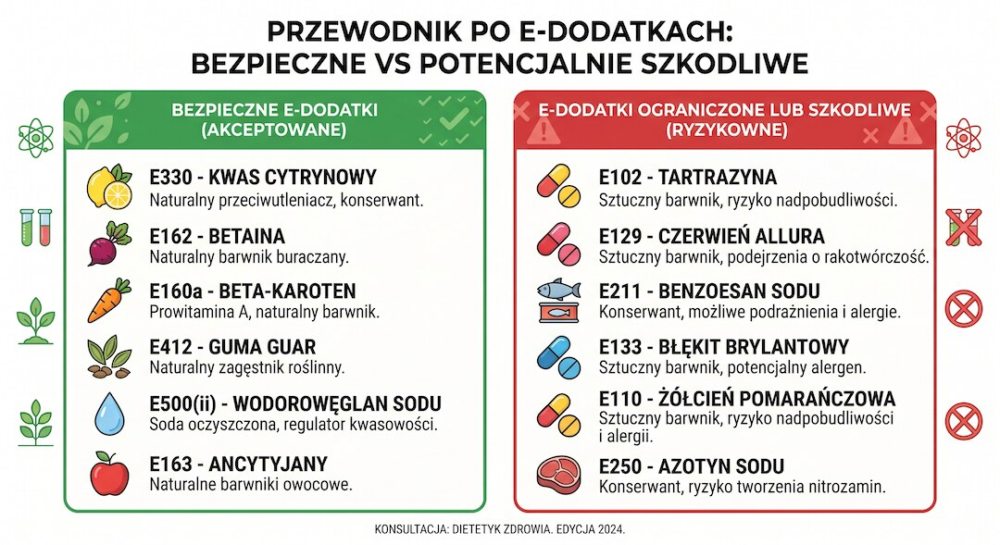
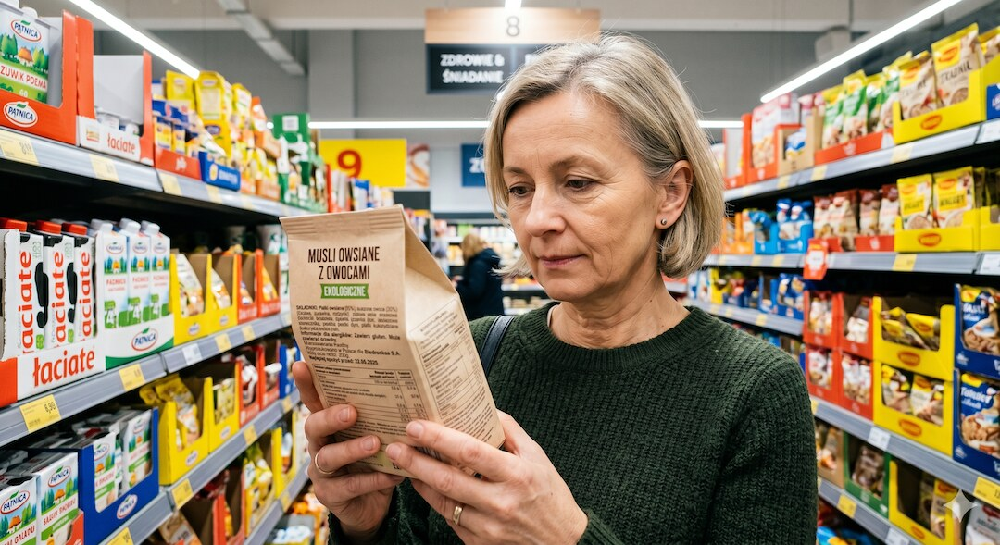

Etykieta na opakowaniu to nie informacja dla konsumenta. To pole bitwy, na którym producent walczy o to, żebyś nie przeczytał tego, co naprawdę powinieneś wiedzieć. Badania z 2024–2025 roku pokazują, że ultraprzetworzona żywność jest powiązana z 32 chorobami przewlekłymi. A mimo to większość z nas wkłada ją do koszyka, przekonana, że kupuje coś zdrowego.
Szybka odpowiedź
Najkrócej: Etykieta na opakowaniu to nie informacja dla konsumenta. To pole bitwy, na którym producent walczy o to, żebyś nie przeczytał tego, co naprawdę powinieneś wiedzieć. Badania z 2024–2025 roku pokazują, że ultraprzetworzona żywność jest powiązana z 32 chorobami przewlekłymi. A mimo to większość z nas wkłada ją do koszyka, przekonana, że kupuje coś zdrowego.
Kluczowe wnioski
- Cukier w składzie może kryć się pod ponad 50 różnymi nazwami — syrop glukozowo-fruktozowy, maltodekstryna, dekstroza to tylko kilka z nich.
- Oznaczenie „light” lub „bez tłuszczu” często oznacza więcej cukru i soli, żeby produkt nadal smakował.
- Rozmiar porcji na etykiecie bywa celowo zaniżany — porcja 30 g płatków to marketing, nie rzeczywistość.
- Badanie z BMJ z 2024 roku powiązało dietę bogatą w żywność ultraprzetworzoną z 32 niekorzystnymi stanami zdrowotnymi u prawie 10 milionów uczestników.
Czym w ogóle jest żywność ultraprzetworzona i dlaczego to ważne?
Ultraprzetworzona żywność to nie po prostu „coś z konserwantem”. To produkty wyprodukowane w wielu etapach przemysłowego przetwarzania, które zawierają składniki, jakich nie znajdziesz w domowej kuchni — emulgatory, stabilizatory, wzmacniacze smaku, barwniki i substancje przedłużające trwałość. Klasyfikuje je system NOVA, opracowany przez brazylijskiego badacza Carlosa Monteiro, który od lat 2010. jest standardem w badaniach żywieniowych.
Skala problemu jest konkretna. Przegląd parasol opublikowany w BMJ w 2024 roku, obejmujący 45 metaanaliz z niemal 10 milionami uczestników, wykazał, że dieta bogata w żywność ultraprzetworzoną jest powiązana z 32 niekorzystnymi stanami zdrowotnymi. Lista obejmuje otyłość, cukrzycę typu 2, choroby sercowo-naczyniowe, nowotwory, zaburzenia układu pokarmowego, astmę, lęk, depresję i śmiertelność ogólną. To nie jest artykuł z plotkarskiego portalu zdrowotnego — to The Lancet i BMJ.
Co szczególnie niepokojące: ryzyko rośnie razem ze spożyciem. Każde dodatkowe 100 gramów ultraprzetworzonej żywności dziennie zwiększa ryzyko nadciśnienia, chorób sercowo-naczyniowych i nowotworów. Nie chodzi więc o to, że raz na jakiś czas zjesz ciastko — chodzi o to, że całe wzorce żywieniowe mogą być zbudowane z produktów, których mechanizm szkodliwości wykracza daleko poza tabelkę kalorii na etykiecie.

Jak cukier ukrywa się pod pięćdziesięcioma twarzami?
To jeden z najstarszych i najbardziej skutecznych trików. Producenci wiedzą, że jeśli cukier stoi na pierwszym miejscu w składzie, konsument odkłada produkt. Rozwiązanie? Podzielić cukier na kilka rodzajów, żeby każdy z nich znalazł się niżej na liście składników — a suma i tak jest spora.
Na etykiecie zamiast słowa „cukier” możesz spotkać: syrop glukozowo-fruktozowy, maltodekstrynę, dekstrozę, fruktozę, sacharozę, odparowany syrop trzcinowy, melasę, nektar z agawy, syrop kukurydziany, syrop ryżowy, syrop z daktyli, koncentrat soku jabłkowego lub pomarańczowego. Każda z tych nazw to inaczej — cukier. Producent rozkłada je po kilka pozycji w składzie, żeby żadna nie trafiła blisko początku listy.
Dodatkowo istnieje popularne nieporozumienie dotyczące syropu z agawy czy cukru kokosowego jako „zdrowszych” alternatyw. Oba zawierają porównywalną ilość kalorii i fruktozy co biały cukier stołowy. Jeśli produkt reklamuje się „bez białego cukru” i zawiera syrop ryżowy oraz nektar z agawy — nie jest zdrowszy. Jest tylko droższy i lepiej opisany na froncie opakowania.

Co oznacza „light”, „bez tłuszczu” i „naturalny” na opakowaniu?
Żywność niskokaloryczna, beztłuszczowa i „naturalna” to trzy kategorie, w których marketing żywności jest najbardziej agresywny i jednocześnie najbardziej skuteczny. Badania opublikowane w ScienceDirect w 2023 roku pokazują, że oznaczenie „low fat” na produkcie redukuje u konsumenta postrzeganie zawartości cukru — nawet gdy cukru jest tam więcej niż w wersji pełnotłustej. To klasyczna pułapka: widzisz jedno dobro, nie widzisz drugiego zła.
Mechanizm jest prosty. Tłuszcz odpowiada za smak. Jak go usuniesz, produkt smakuje jak karton. Żeby to naprawić, producent dodaje cukier, sól i wzmacniacze smaku. Dietetyk z University Hospitals mówi wprost: wersja niskotłuszczowa to często produkt z wyższą zawartością cukru i soli niż oryginał. Jesz mniej tłuszczu — to prawda. Ale dostając to, płacisz innymi składnikami.
Słowo „naturalny” jest jeszcze bardziej elastyczne. W przepisach UE i USA nie ma prawnie chronionej definicji „naturalny” w odniesieniu do żywności przetworzonej. Oznacza to, że producent może użyć tego słowa na produkcie zawierającym sztuczne aromaty, konserwanty i barwniki — wystarczy, że bazowe surowce kiedyś „pochodziły z natury”. Badanie cytowane przez Brookings Institute pokazuje, że oznaczenie „naturalny” podwyższa postrzeganą zdrowotność produktu nawet u świadomych konsumentów. Nawet na papierosach — jak wykazało badanie w Nicotine & Tobacco Research.
Jeśli chcesz wiedzieć więcej o tym, jak rozpoznawać żywność ultraprzetworzoną na co dzień, zerknij na nasz artykuł o tym, jak działa żywność ultra-przetworzona i dlaczego uzależnia.

Jak rozmiar porcji manipuluje tym, co widzisz w tabelce wartości odżywczych?
To jeden z najbardziej skutecznych trików, bo jest w pełni legalny. Producent nie kłamie — on po prostu definiuje porcję w taki sposób, żeby liczby w tabelce wartości odżywczych wyglądały jak najmniej alarmująco. Płatki śniadaniowe z porcją 30 g? Nikt nie nalewa sobie tyle do miski. Realnie to 60–80 g — a więc dwa do trzech razy więcej cukru, kalorii i sodu niż widać na etykiecie.
Podobna sytuacja dotyczy napojów energetycznych w puszkach o pojemności 500 ml, gdzie porcja jest zdefiniowana jako 250 ml — połowa puszki. Ktoś, kto liczy węglowodany i czyta tabelkę, zobaczy 27 g cukru. W rzeczywistości, po wypiciu całej puszki za jednym razem, dostaje 54 g — to więcej niż dzienna norma WHO dla dorosłego.
Sprawa wygląda podobnie z sosami, kremami orzechowymi i dressingami. Producent deklaruje porcję 15 g (jedna łyżka stołowa), ale realne użycie często trzykrotnie przekracza tę ilość. Zanim więc spojrzysz na liczbę kalorii, sprawdź, czy porcja opisana na etykiecie ma cokolwiek wspólnego z tym, ile naprawdę zjesz.

Co producenci przemysłu spożywczego wiedzą o twoim mózgu, czego ty nie wiesz?
Smak to chemia. I to dosłownie. Przemysłowe laboratoria smaków (tzw. flavor houses) projektują kombinacje smakowo-aromatyczne tak, żeby wywołać konkretne odczucia neurologiczne — przyjemność, szybkie nasycenie zmysłowe przy jednoczesnym utrudnieniu odczucia sytości. To zjawisko określane jest w literaturze naukowej jako „hyperpalatability” — hipersmaczność. Produkt jest zaprojektowany tak, żebyś chciał zjeść więcej, niż potrzebujesz.
Glutaminian sodu (E621) to przykład wzmacniacza smaku, który zwiększa apetyt. Jest naturalnie obecny w dojrzałych pomidorach i parmezanie — ale w stężeniach przemysłowych działa inaczej. Badania wskazują, że wysoka ekspozycja na glutaminian może zaburzać sygnalizację leptynową — hormonu sytości. Nie jest to jednak temat naukowy zamknięty: część badań wskazuje na efekt, inne go nie potwierdzają przy typowych dawkach żywieniowych. Warto traktować to jako obszar nadal badany, nie jako pewnik.
Żywność ultraprzetworzona rozkłada się też szybciej podczas trawienia — powoduje gwałtowniejsze skoki glukozy we krwi i paradoksalnie sprawia, że czujesz się mniej najedzony niż po posiłku ze świeżych składników o tej samej kaloryczności. Badania Stanford Medicine z 2025 roku potwierdzają ten mechanizm: coś w samym procesie ultraprzetarzania szkodzi organizmowi niezależnie od składu odżywczego. To oznacza, że tabelka wartości odżywczych może wyglądać rozsądnie, a i tak produkt będzie działał na twój organizm gorzej niż świeże jedzenie.
O tym, jak dieta wpływa na profil lipidowy i ryzyko sercowo-naczyniowe po pięćdziesiątce, piszemy więcej w artykule o ApoB, ApoA i tym, jak czytać wyniki cholesterolu.
Które składniki są naprawdę groźne, a które to tylko strach przed „E-kami”?
Popularny mit mówi, że każdy składnik oznaczony literą „E” jest szkodliwy. To nieprawda. E100 to kurkumina, E260 to ocet, a E300 to witamina C. Numer „E” oznacza tylko, że substancja przeszła europejską certyfikację. Automatyczne unikanie „E-ków” to błąd, przez który możesz przepłacić za produkt bez tych oznaczeń, zawierający te same dodatki pod pełną nazwą chemiczną.
To powiedziawszy, istnieją konkretne dodatki, co do których mamy mocniejsze dowody na potencjalną szkodliwość przy wysokim spożyciu. Czerwony barwnik E129 (Czerwień Allura AC) jest zakazany lub ograniczony w kilku krajach europejskich. W 2025 roku FDA zakazała stosowania Czerwieni nr 3 (E127) w żywności w USA po dekadach lobbowania przemysłu. Dwutlenek tytanu (E171) — stosowany do wybielania cukierków i tabletek — w 2022 roku Europejski Urząd ds. Bezpieczeństwa Żywności uznał za potencjalnie genotoksyczny i zakazał go w UE. Azotany i azotyny (E249–E252) stosowane w wędlinach są klasyfikowane przez WHO jako prawdopodobnie rakotwórcze dla człowieka w kontekście przetworzonego mięsa.
Przetworzone mięso — wędliny, hot-dogi, parówki — WHO zaklasyfikowała jako Grupę 1 substancji rakotwórczych (pewne działanie rakotwórcze) w odniesieniu do raka jelita grubego. Ta sama kategoria co tytoń i azbest — choć ważne zastrzeżenie: chodzi o poziom pewności dowodów naukowych, nie o siłę efektu. Palenie tytoniu jest wielokrotnie bardziej szkodliwe niż okazjonalne zjedzenie parówki. Ale regularne, codzienne spożycie przetworzonych mięs statystycznie zwiększa ryzyko.
Jeśli temat ryzyka sercowo-naczyniowego i stanu zapalnego jest dla ciebie ważny, więcej o mechanizmach lipidowych znajdziesz w artykule o diecie, LDL i tym, jak interpretować badania naukowe.
- E171 (dwutlenek tytanu) — zakazany w UE od 2022 roku jako potencjalnie genotoksyczny
- E127 (Czerwień nr 3) — zakazana w USA przez FDA w 2025 roku
- E250/E252 (azotyny/azotany) — stosowane w wędlinach, WHO: Grupa 2A (prawdopodobnie rakotwórcze)
- Syrop glukozowo-fruktozowy — powiązany z otyłością i stanem zapalnym przy wysokim spożyciu
- Tłuszcze trans (częściowo uwodornione oleje roślinne) — zakazane lub mocno ograniczone w UE i USA

Jak czytać etykietę tak, żeby nie dać się nabrać?
Zacznij od tyłu. Przód opakowania to reklama — tam producent umieszcza to, co chce, żebyś zapamiętał. Tył — czyli wykaz składników i tabela wartości odżywczych — to dokument regulowany prawem. Rozporządzenie UE nr 1169/2011 nakłada obowiązek podawania składników w kolejności malejącej według masy. Jeśli cukier jest na drugim lub trzecim miejscu, produkt ma go naprawdę dużo.
Kilka zasad, które działają w praktyce: Po pierwsze — policz składniki. Im krótsza lista, tym mniej przetworzony produkt. Po drugie — jeśli masz problem z wymówieniem składnika, sprawdź, co to jest. Po trzecie — porównuj produkty na 100 g, nie na porcję (porcja bywa fikcją). Po czwarte — zwróć uwagę, czy sól jest wysoko na liście składników: więcej niż 1,5 g soli na 100 g to dużo. Po piąte — pamiętaj o podzielonym cukrze: jeśli widzisz syrop glukozowo-fruktozowy, fruktozę i maltodekstrynę w jednym produkcie, zsumuj je mentalnie.
Jedna praktyczna wskazówka na koniec: w 2025 roku FDA zaproponowała nowy obowiązek umieszczania na przedniej stronie opakowania ostrzeżeń o wysokiej zawartości cukru, soli lub tłuszczów nasyconych. Kilkanaście krajów już to wdrożyło. Polska i reszta UE są w trakcie dyskusji legislacyjnych. Do czasu, kiedy takie oznaczenia staną się obowiązkiem, musisz to robić sam — i wiesz już jak.
Zdrowe zakupy to część szerszej układanki. Jeśli chcesz rozszerzyć temat o praktyczne zasady codziennego jedzenia, zobacz też naszą stronę kategorii Jedzenie, gdzie zbieramy artykuły o żywieniu po pięćdziesiątce.

Najczęściej zadawane pytania
Czy żywność ultraprzetworzona jest naprawdę tak szkodliwa?
Tak, i mamy na to twarde dane. Przegląd 45 metaanaliz opublikowany w BMJ w 2024 roku, obejmujący blisko 10 milionów uczestników, powiązał dietę bogatą w żywność ultraprzetworzoną z 32 niekorzystnymi stanami zdrowotnymi — od otyłości, przez cukrzycę i choroby serca, po depresję i wyższe ryzyko śmiertelności ogólnej. Badania wskazują, że coś w samym procesie ultraprzetarzania szkodzi organizmowi niezależnie od tabelki wartości odżywczych.
Co to jest „ingredient splitting” i dlaczego producenci go stosują?
Ingredient splitting to technika polegająca na rozkładaniu jednego składnika (najczęściej cukru) na kilka pozycji pod różnymi nazwami — np. syrop glukozowo-fruktozowy, fruktoza, maltodekstryna. Każda z tych pozycji trafia niżej na liście składników, przez co żaden cukier nie pojawia się na pierwszych miejscach. Efekt: produkt wygląda na „mniej słodki”, choć łączna ilość cukru może być bardzo wysoka.
Czy produkty „light” i „bez tłuszczu” są zdrowsze?
Nie automatycznie. Badania pokazują, że usunięcie tłuszczu pogarsza smak produktu, więc producenci wyrównują to cukrem, solą i wzmacniaczami smaku. Produkt „low fat” może mieć więcej cukru i soli niż wersja pełnotłusta. Zawsze porównuj pełny skład — nie sam wyróżniony napis na froncie opakowania.
Czy wszystkie dodatki oznaczone „E” są szkodliwe?
Nie. Wiele substancji oznaczonych numerem E to naturalne składniki — kurkumina (E100), kwas askorbinowy czyli witamina C (E300), kwas octowy (E260). Numer E to europejska certyfikacja, nie czarna lista. Jednak niektóre dodatki mają mocniejsze dowody szkodliwości przy wysokim spożyciu — m.in. E171 (zakazany w UE), E127 (zakazany przez FDA w USA w 2025 r.) czy azotyny E250/E252 stosowane w wędlinach.
Jak rozpoznać ukryty cukier w składzie produktu?
Szukaj tych nazw: syrop glukozowo-fruktozowy, maltodekstryna, dekstroza, fruktoza, sacharoza, odparowany syrop trzcinowy, melasa, nektar z agawy, syrop kukurydziany, syrop ryżowy, koncentrat soku owocowego. Jeśli kilka z tych pozycji pojawia się w jednym produkcie, łączna zawartość cukru jest prawdopodobnie wysoka — nawet jeśli żadna z nich nie jest na pierwszym miejscu w składzie.
Obwód pasa, tłuszcz trzewny, kortyzol i nawyki wspierające metabolizm omawiamy szerzej w Centrum Metabolizmu i Brzucha po 50-tce.
Źródła
- Lane MM et al., Ultra-processed food exposure and adverse health outcomes: umbrella review of epidemiological meta-analyses. BMJ, 2024
- Monteiro CA et al., Ultra-processed foods and human health: the main thesis and the evidence. The Lancet, 2025
- American College of Cardiology: Eating Ultra-Processed Foods May Harm Your Health — ACC Asia 2025 Scientific Meeting
- Stanford Medicine: Ultra-processed food — five things to know, 2025
- Johns Hopkins Bloomberg School of Public Health: What Are Ultra-Processed Foods? 2025
- PMC/PLOS: The case for stronger regulation of deceptive nutrition-related claims on unhealthy food, 2025
- ScienceDirect: Truthful yet misleading — Consumer response to 'low fat' food with high sugar content, 2023
- Environmental Working Group: What Are Ultra-Processed Foods, 2025
- Rozporządzenie UE nr 1169/2011 — ogólne zasady etykietowania żywności
Uwaga: Artykuł ma charakter informacyjny i edukacyjny. Nie zastępuje konsultacji lekarskiej, diagnozy ani leczenia.